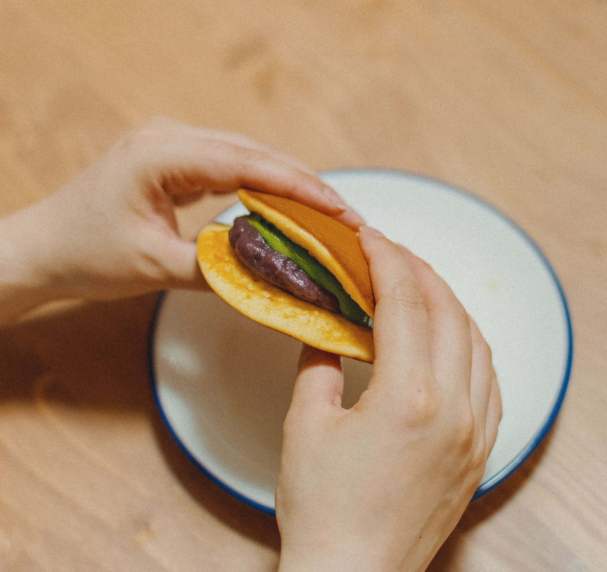

Dorayaki
L’anko, una pasta dolça de mongetes, és el seu farciment tradicional.
El dorayaki uneix dues peces de massa amb anko. El daifuku embolcalla el farciment amb mochi. Coneix aquests dos dolços i algunes de les seves variants.
Descobreix els dolços